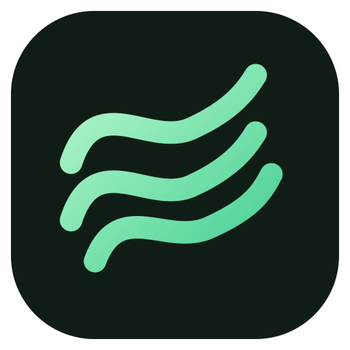

Wave
Перейти к музыке
wave
1.0.7
‹
›
⌂
Ctrl K
Войти через VK ↗
ВАША ЛИЧНАЯ КОЛЛЕКЦИЯ
Моя музыка
Вся ваша музыка — в одном месте.
▶︎ Слушать
Переименовать
ВКонтакте · Wave
≋
Альбомы и синглы
Альбомы и синглы в VK не найдены.
Участие в релизах
Треки
Ваша музыка из VK
Сортировка
Порядок VK
Название · А–Я
Исполнитель · А–Я
Длительность · по возрастанию
Обратный порядок
Синхронизация
#
Название
Исполнитель
Пока нет песен
Найти музыку
Коллекция
Закрыть
Сохранить
Синхронизация с VK
Закрыть
ВАША МУЗЫКА
Текст песни
Повторить загрузку